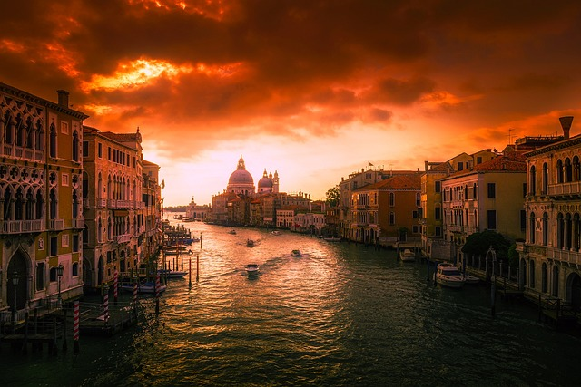

Veneția, adesea numită "La Serenissima", este unul dintre cele mai iconice și romantice orașe din lume. Cunoscut pentru rețeaua sa complexă de canale, arhitectura sa istorică și bogata sa moștenire culturală, Veneția atrage milioane de turiști în fiecare an. Acest eseu explorează istoria Veneției, atracția sa turistică și semnificația sa culturală și arhitecturală unică.
Veneția a fost fondată în secolul al V-lea de refugiați care fugeau de invaziile barbare de pe teritoriul italian. Ei s-au stabilit pe insulele din Laguna Venețiană, căutând siguranță în terenul mlastinos, inaccesibil. Până în secolul al IX-lea, Veneția devenise o republică maritimă puternică, folosindu-și locația strategică pentru a domina rutele comerciale între Europa și Est.
Între secolele al X-lea și al XVII-lea, Veneția a fost o putere economică și maritimă majoră. Flota sa controla comerțul în Mediterană, iar orașul devenise un centru pentru comerț, artă și cultură. Structura politică a Veneției era unică, caracterizată printr-o combinație de oligarhie și republicanis. Ducele, ales pe viață, servea ca șef de stat, dar puterea era distribuită între diferite consilii pentru a preveni autocratismul.

Perioada Renașterii a văzut Veneția devenind un centru al artei, arhitecturii și literaturii. Figuri proeminente precum Titian, Tintoretto și Veronese și-au pus amprenta asupra orașului. Arhitectura Veneției din această perioadă include palate grandioase, biserici și clădiri publice, reflectând bogăția și mecenatul artistic al orașului.
The decline of Venice began in the late 17th century due to competition from other European powers and the silting of its lagoon, which hindered trade. In 1797, Napoleon Bonaparte conquered Venice, marking the end of the Venetian Republic. The city later became part of the Austrian Empire and, in 1866, was incorporated into the Kingdom of Italy. Today, Venice faces challenges such as rising sea levels and mass tourism, but it remains a living museum of its glorious past.
Veneția, cunoscută și sub numele de "La Serenissima", este un oraș unic și fascinant, situat în nord-estul Italiei, în regiunea Veneto. Fondată în secolul al V-lea de refugiați care fugeau de invaziile barbare, Veneția și-a construit ulterior reputația ca unul dintre cele mai iconice și romantice orașe din lume.
Adesea numită "camera de desen a Europei", Piața San Marco este inima Veneției. Este înconjurată de arhitectură uimitoare, inclusiv Bazilica San Marco, Palatul Dogilor și Campanile (turnul clopotniță). Bazilica San Marco, cu mozaicurile sale opulente bizantine și interioarele aurite, este una dintre cele mai magnifice biserici din lume.
Dominând piața se află Basilica San Marco, un exemplu uimitor de arhitectură italo-bizantină. Cunoscută pentru designul său opulent, mozaicurile aurite și caii iconici ai Sfântului Marcu, această catedrală este o capodoperă a artei și arhitecturii religioase. Vizitatorii pot explora interioarele intricate ale bazilicii, pot urca pe terasă pentru vederi panoramice ale pieței și pot vizita Tezaurul și Muzeul pentru a vedea relicve și artefacte prețioase.